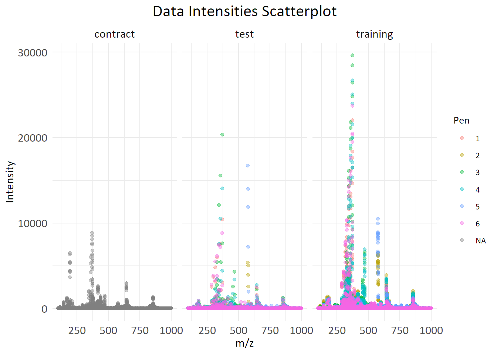
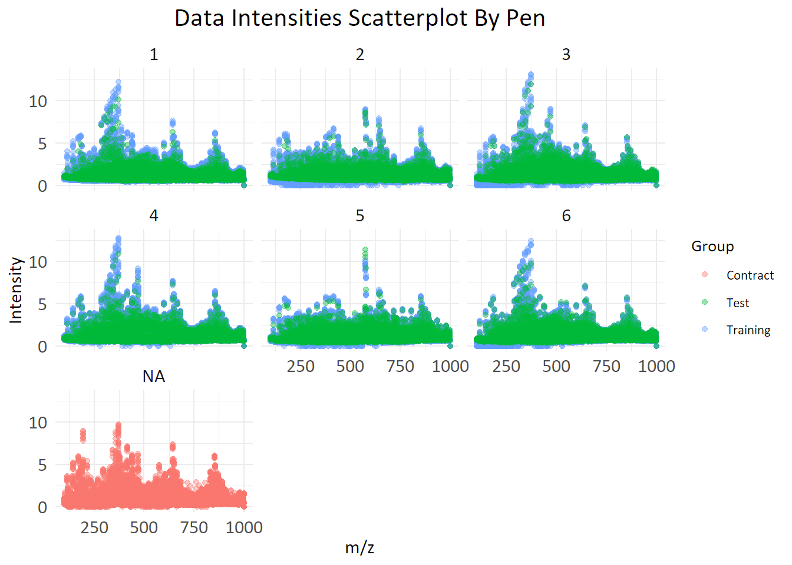

Data Wrangling
Last updated: 2021-11-23
Checks: 7 0
Knit directory: PIB_workflowr/data/
This reproducible R Markdown analysis was created with workflowr (version 1.6.2). The Checks tab describes the reproducibility checks that were applied when the results were created. The Past versions tab lists the development history.
Great! Since the R Markdown file has been committed to the Git repository, you know the exact version of the code that produced these results.
Great job! The global environment was empty. Objects defined in the global environment can affect the analysis in your R Markdown file in unknown ways. For reproduciblity it’s best to always run the code in an empty environment.
The command set.seed(20210909) was run prior to running the code in the R Markdown file. Setting a seed ensures that any results that rely on randomness, e.g. subsampling or permutations, are reproducible.
Great job! Recording the operating system, R version, and package versions is critical for reproducibility.
Nice! There were no cached chunks for this analysis, so you can be confident that you successfully produced the results during this run.
Great job! Using relative paths to the files within your workflowr project makes it easier to run your code on other machines.
Great! You are using Git for version control. Tracking code development and connecting the code version to the results is critical for reproducibility.
The results in this page were generated with repository version 9a0fa85. See the Past versions tab to see a history of the changes made to the R Markdown and HTML files.
Note that you need to be careful to ensure that all relevant files for the analysis have been committed to Git prior to generating the results (you can use wflow_publish or wflow_git_commit). workflowr only checks the R Markdown file, but you know if there are other scripts or data files that it depends on. Below is the status of the Git repository when the results were generated:
Ignored files:
Ignored: .Rhistory
Ignored: .Rproj.user/
Ignored: analysis/.Rhistory
Untracked files:
Untracked: data/190910,01h50_II initials signature page 3.txt
Untracked: data/190910,01h50_III initials signature page 3.txt
Untracked: data/190910,01h50_SFsignature page 3.txt
Untracked: data/190910,21h19_II initials page 1.txt
Untracked: data/190910,21h19_III initials page 1.txt
Untracked: data/190910,21h19_SF initials page 1.txt
Untracked: data/190910,23h44_II initials page 2.txt
Untracked: data/190910,23h44_III initials page 2.txt
Untracked: data/190910,23h44_SF initials page 2.txt
Untracked: data/CONTRACT REGION OF INTERESTED EXPORTS/
Untracked: data/Full square 1 underneat number 1.txt
Untracked: data/Full square 1 underneat number 2.txt
Untracked: data/Full square 2 underneat number 1.txt
Untracked: data/Full square beside number 4.txt
Untracked: data/Full square underneat number 3.txt
Untracked: data/II full square ink under number 2.txt
Untracked: data/II full square ink under number 3.txt
Untracked: data/II square ink under number 1_ROI1.txt
Untracked: data/II square ink under number 1_ROI2.txt
Untracked: data/II square ink under number 1_ROI3.txt
Untracked: data/INK SQUARE ANALYSIS (TRAINING SET)-roi EXPORTS/
Untracked: data/STRIKES ANALYSIS (I TEST SET)-ROI EXPORTS/
Untracked: data/filenames.tsv
Untracked: data/full_data.rds
Untracked: data/site_libs/
Untracked: data/square ink above number 5_ROI1.txt
Untracked: data/square ink above number 5_ROI2.txt
Untracked: data/square ink above number 5_ROI3.txt
Untracked: data/square ink above number 6_ROI1.txt
Untracked: data/square ink above number 6_ROI2.txt
Untracked: data/square ink above number 6_ROI3.txt
Untracked: data/square ink beside number 4_ROI1.txt
Untracked: data/square ink beside number 4_ROI2.txt
Untracked: data/square ink beside number 4_ROI3.txt
Untracked: data/square ink under number 1_ROI1.txt
Untracked: data/square ink under number 1_ROI2.txt
Untracked: data/square ink under number 1_ROI3.txt
Untracked: data/square ink under number 2_ROI1.txt
Untracked: data/square ink under number 2_ROI2.txt
Untracked: data/square ink under number 2_ROI3.txt
Untracked: data/square ink under number 3_ROI1.txt
Untracked: data/square ink under number 3_ROI2.txt
Untracked: data/square ink under number 3_ROI3.txt
Untracked: data/squares analysis_number 2.txt
Untracked: data/squares analysis_number 3.txt
Untracked: data/squares analysis_number 4.txt
Untracked: data/squares analysis_number1.txt
Untracked: data/squares_analysis_number 2.txt
Untracked: data/squares_analysis_number 5.txt
Untracked: data/squares_analysis_number 6.txt
Untracked: data/strike 1.txt
Untracked: data/strike 2.txt
Untracked: data/strike 3.txt
Untracked: data/strike 4.txt
Untracked: data/strike 5.txt
Untracked: data/strike 6.txt
Untracked: full_data.rds
Unstaged changes:
Deleted: analysis/Data Wrangling.Rmd
Note that any generated files, e.g. HTML, png, CSS, etc., are not included in this status report because it is ok for generated content to have uncommitted changes.
These are the previous versions of the repository in which changes were made to the R Markdown (analysis/Whole_data_visualizations.Rmd) and HTML (docs/Whole_data_visualizations.html) files. If you’ve configured a remote Git repository (see ?wflow_git_remote), click on the hyperlinks in the table below to view the files as they were in that past version.
| File | Version | Author | Date | Message |
|---|---|---|---|---|
| Rmd | 9a0fa85 | marcsole96 | 2021-11-23 | played with visualizing the data |
| html | 730a372 | marcsole96 | 2021-11-22 | Build site. |
| Rmd | 2aaf977 | marcsole96 | 2021-11-22 | started visualizing the whole data |
Setup
#setwd("../PIB_workflowr/data")
getwd()[1] "C:/Users/mysit/Documents/Bioinformatica/Semestre_3/Projecte_Palle/PIB_workflowr/data"library(tidyverse)
library(ggplot2)
library(ggfortify)
library(Rtsne)
library(reshape2)
library(ggpubr)
library(gghighlight)
library(plotly)
library(corrplot)
theme_set(theme_minimal())Data Loading
x <- read_tsv("filenames.tsv")
-- Column specification --------------------------------------------------------
cols(
filename = col_character(),
pen = col_double(),
group = col_character(),
data_folder = col_character()
)x$fullpath <- paste("", x$filename, sep="")
r <- list()
for (i in 1:nrow(x)) {
tmp <- read_tsv(x$fullpath[i], col_names = F, col_types = "dd")
names(tmp) <- c("mz", "intensity")
tmp <- tmp %>% bind_cols(x[i,])
r[[length(r)+1]] <- tmp
}
df <- bind_rows(r)
df$pen<-as.character(df$pen)
str(df)tibble [225,050 x 7] (S3: spec_tbl_df/tbl_df/tbl/data.frame)
$ mz : num [1:225050] 100 100 100 101 101 ...
$ intensity : num [1:225050] 0.652 0.871 0.756 0.65 0.597 ...
$ filename : chr [1:225050] "Full square 1 underneat number 1.txt" "Full square 1 underneat number 1.txt" "Full square 1 underneat number 1.txt" "Full square 1 underneat number 1.txt" ...
$ pen : chr [1:225050] "1" "1" "1" "1" ...
$ group : chr [1:225050] "training" "training" "training" "training" ...
$ data_folder: chr [1:225050] "squares_analysis" "squares_analysis" "squares_analysis" "squares_analysis" ...
$ fullpath : chr [1:225050] "Full square 1 underneat number 1.txt" "Full square 1 underneat number 1.txt" "Full square 1 underneat number 1.txt" "Full square 1 underneat number 1.txt" ...
- attr(*, "spec")=
.. cols(
.. X1 = col_double(),
.. X2 = col_double()
.. )write_rds(df, file = "full_data.rds")
rm(r,tmp,x)How does the data look like?
Looking at the dataframe
head(df,7)# A tibble: 7 x 7
mz intensity filename pen group data_folder fullpath
<dbl> <dbl> <chr> <chr> <chr> <chr> <chr>
1 100 0.652 Full square 1 und~ 1 train~ squares_ana~ Full square 1 un~
2 100. 0.871 Full square 1 und~ 1 train~ squares_ana~ Full square 1 un~
3 100. 0.756 Full square 1 und~ 1 train~ squares_ana~ Full square 1 un~
4 101. 0.650 Full square 1 und~ 1 train~ squares_ana~ Full square 1 un~
5 101. 0.597 Full square 1 und~ 1 train~ squares_ana~ Full square 1 un~
6 101 1.25 Full square 1 und~ 1 train~ squares_ana~ Full square 1 un~
7 101. 0.462 Full square 1 und~ 1 train~ squares_ana~ Full square 1 un~Plotting
Basic plot of the three sets of data we have:
df %>% ggplot(aes(x=mz,y=intensity))+geom_point(aes(color=pen),alpha=.4) + facet_wrap(~group)
Let’s check only test and train and facet_wrapping:
df %>% filter(group==c("training","test")) %>% ggplot(aes(x=mz,y=intensity))+ geom_point(aes(color=group), size=2, alpha=.4) + facet_wrap(~pen)
df %>% filter(group==c("training","test")) %>% ggplot(aes(x=mz,y=intensity))+ geom_point(aes(color=pen, shape = group), size=2, alpha=.4) + facet_wrap(~group+pen)
Whole data PCA analysis
2d PCA
pca_df<-spread(df,mz,intensity)
pr.out <- prcomp(pca_df[,6:(ncol(pca_df)-1)], scale. = TRUE)
autoplot(pr.out, data = pca_df, colour = 'group', shape="group", size=2)+scale_shape_manual(values=c(1, 8, 12))+ scale_color_manual(values=c("black", "darkorange", "dodgerblue"))+geom_text(aes(label=pen),hjust=-1, vjust=1)Warning: `select_()` was deprecated in dplyr 0.7.0.
Please use `select()` instead.Warning: Removed 9 rows containing missing values (geom_text). 3d PCA
3d PCA
dat_3d <- pr.out$x[,1:3] %>% as_tibble() %>% mutate(group = pca_df$group, pen=pca_df$pen)
fig <- plot_ly(dat_3d, x = ~PC1, y = ~PC2, z = ~PC3,
color = ~group,colors = c("black", "darkorange", "dodgerblue"), size = I(100))
fig <- fig %>% add_markers()
fig <- fig %>% layout(scene = list(xaxis = list(title = 'PC1'),
yaxis = list(title = 'PC2'),
zaxis = list(title = 'PC3')))
figContract data PCA analysis
2d PCA
pca_df<-df%>%filter(group=="contract") %>% spread(mz,intensity)
pca_df$filename<-gsub(".*_", "", pca_df$filename)
pca_df$filename<-gsub("\\.txt$","",pca_df$filename)
pca_df$filename<-gsub(" ", "_", pca_df$filename)
pca_res <- prcomp(pca_df[,6:(ncol(pca_df)-1)], scale. = TRUE)
autoplot(pca_res, data = pca_df, colour = 'filename', size=2) 3d PCA
dat_3d <- pca_res$x[,1:3] %>% as_tibble() %>% mutate(filenames = pca_df$filename)
fig <- plot_ly(dat_3d, x = ~PC1, y = ~PC2, z = ~PC3,
color =~filenames,colors=c('#8dc5f0','#43abf9','#0092ff','#cef37b','#a6d045','#7caa16','#f8bc7d','#e0892e','#ff8200'), size = I(150))
fig <- fig %>% add_markers()
fig <- fig %>% layout(scene = list(xaxis = list(title = 'PC1'),
yaxis = list(title = 'PC2'),
zaxis = list(title = 'PC3')))
figCorrelation matrix
source("http://www.sthda.com/upload/rquery_cormat.r")
contract<-df%>%filter(group=="contract")
contract$filename<-gsub(".*_", "", contract$filename)
contract$filename<-gsub("\\.txt$","",contract$filename)
contract$filename<-gsub(" ", "_", contract$filename)
contract%>%filter(group=="contract") %>% select("filename","mz","intensity") %>% spread(filename,intensity) %>% rquery.cormat()
$r
mz III_initials_page_1 III_initials_page_2
mz 1
III_initials_page_1 -0.029 1
III_initials_page_2 -0.029 0.99 1
SF_initials_page_2 -0.033 0.53 0.52
SF_initials_page_1 -0.03 0.45 0.44
SFsignature_page_3 -0.032 0.47 0.46
II_initials_page_2 -0.041 0.5 0.49
II_initials_signature_page_3 -0.042 0.57 0.56
II_initials_page_1 -0.04 0.63 0.62
III_initials_signature_page_3 -0.04 0.61 0.6
SF_initials_page_2 SF_initials_page_1
mz
III_initials_page_1
III_initials_page_2
SF_initials_page_2 1
SF_initials_page_1 0.99 1
SFsignature_page_3 1 1
II_initials_page_2 0.95 0.92
II_initials_signature_page_3 0.95 0.92
II_initials_page_1 0.94 0.91
III_initials_signature_page_3 0.95 0.91
SFsignature_page_3 II_initials_page_2
mz
III_initials_page_1
III_initials_page_2
SF_initials_page_2
SF_initials_page_1
SFsignature_page_3 1
II_initials_page_2 0.93 1
II_initials_signature_page_3 0.93 0.99
II_initials_page_1 0.92 0.98
III_initials_signature_page_3 0.92 0.99
II_initials_signature_page_3 II_initials_page_1
mz
III_initials_page_1
III_initials_page_2
SF_initials_page_2
SF_initials_page_1
SFsignature_page_3
II_initials_page_2
II_initials_signature_page_3 1
II_initials_page_1 0.99 1
III_initials_signature_page_3 1 1
III_initials_signature_page_3
mz
III_initials_page_1
III_initials_page_2
SF_initials_page_2
SF_initials_page_1
SFsignature_page_3
II_initials_page_2
II_initials_signature_page_3
II_initials_page_1
III_initials_signature_page_3 1
$p
mz III_initials_page_1 III_initials_page_2
mz 0
III_initials_page_1 0.051 0
III_initials_page_2 0.049 0 0
SF_initials_page_2 0.026 0 1.7e-309
SF_initials_page_1 0.041 2.6e-223 5.7e-211
SFsignature_page_3 0.03 2.5e-249 7e-237
II_initials_page_2 0.0064 9.79999999999999e-281 3.2e-270
II_initials_signature_page_3 0.0046 0 0
II_initials_page_1 0.0076 0 0
III_initials_signature_page_3 0.0074 0 0
SF_initials_page_2 SF_initials_page_1
mz
III_initials_page_1
III_initials_page_2
SF_initials_page_2 0
SF_initials_page_1 0 0
SFsignature_page_3 0 0
II_initials_page_2 0 0
II_initials_signature_page_3 0 0
II_initials_page_1 0 0
III_initials_signature_page_3 0 0
SFsignature_page_3 II_initials_page_2
mz
III_initials_page_1
III_initials_page_2
SF_initials_page_2
SF_initials_page_1
SFsignature_page_3 0
II_initials_page_2 0 0
II_initials_signature_page_3 0 0
II_initials_page_1 0 0
III_initials_signature_page_3 0 0
II_initials_signature_page_3 II_initials_page_1
mz
III_initials_page_1
III_initials_page_2
SF_initials_page_2
SF_initials_page_1
SFsignature_page_3
II_initials_page_2
II_initials_signature_page_3 0
II_initials_page_1 0 0
III_initials_signature_page_3 0 0
III_initials_signature_page_3
mz
III_initials_page_1
III_initials_page_2
SF_initials_page_2
SF_initials_page_1
SFsignature_page_3
II_initials_page_2
II_initials_signature_page_3
II_initials_page_1
III_initials_signature_page_3 0
$sym
mz III_initials_page_1 III_initials_page_2
mz 1
III_initials_page_1 1
III_initials_page_2 B 1
SF_initials_page_2 . .
SF_initials_page_1 . .
SFsignature_page_3 . .
II_initials_page_2 . .
II_initials_signature_page_3 . .
II_initials_page_1 , ,
III_initials_signature_page_3 , .
SF_initials_page_2 SF_initials_page_1
mz
III_initials_page_1
III_initials_page_2
SF_initials_page_2 1
SF_initials_page_1 B 1
SFsignature_page_3 1 1
II_initials_page_2 * *
II_initials_signature_page_3 * *
II_initials_page_1 * *
III_initials_signature_page_3 * *
SFsignature_page_3 II_initials_page_2
mz
III_initials_page_1
III_initials_page_2
SF_initials_page_2
SF_initials_page_1
SFsignature_page_3 1
II_initials_page_2 * 1
II_initials_signature_page_3 * B
II_initials_page_1 * B
III_initials_signature_page_3 * B
II_initials_signature_page_3 II_initials_page_1
mz
III_initials_page_1
III_initials_page_2
SF_initials_page_2
SF_initials_page_1
SFsignature_page_3
II_initials_page_2
II_initials_signature_page_3 1
II_initials_page_1 B 1
III_initials_signature_page_3 1 1
III_initials_signature_page_3
mz
III_initials_page_1
III_initials_page_2
SF_initials_page_2
SF_initials_page_1
SFsignature_page_3
II_initials_page_2
II_initials_signature_page_3
II_initials_page_1
III_initials_signature_page_3 1
attr(,"legend")
[1] 0 ' ' 0.3 '.' 0.6 ',' 0.8 '+' 0.9 '*' 0.95 'B' 1
sessionInfo()R version 4.0.4 (2021-02-15)
Platform: x86_64-w64-mingw32/x64 (64-bit)
Running under: Windows 10 x64 (build 19043)
Matrix products: default
locale:
[1] LC_COLLATE=Catalan_Spain.1252 LC_CTYPE=Catalan_Spain.1252
[3] LC_MONETARY=Catalan_Spain.1252 LC_NUMERIC=C
[5] LC_TIME=Catalan_Spain.1252
attached base packages:
[1] stats graphics grDevices utils datasets methods base
other attached packages:
[1] corrplot_0.92 plotly_4.9.3 gghighlight_0.3.2 ggpubr_0.4.0
[5] reshape2_1.4.4 Rtsne_0.15 ggfortify_0.4.11 forcats_0.5.1
[9] stringr_1.4.0 dplyr_1.0.5 purrr_0.3.4 readr_1.4.0
[13] tidyr_1.1.3 tibble_3.0.3 ggplot2_3.3.3 tidyverse_1.3.1
loaded via a namespace (and not attached):
[1] fs_1.5.0 lubridate_1.7.10 httr_1.4.2 rprojroot_2.0.2
[5] tools_4.0.4 backports_1.1.10 bslib_0.2.4 utf8_1.2.1
[9] R6_2.5.0 DBI_1.1.1 lazyeval_0.2.2 colorspace_1.4-1
[13] withr_2.4.2 tidyselect_1.1.0 gridExtra_2.3 curl_4.3
[17] compiler_4.0.4 git2r_0.28.0 cli_2.4.0 rvest_1.0.0
[21] xml2_1.3.2 labeling_0.4.2 sass_0.3.1 scales_1.1.1
[25] digest_0.6.25 foreign_0.8-80 rmarkdown_2.7 rio_0.5.26
[29] pkgconfig_2.0.3 htmltools_0.5.1.1 dbplyr_2.1.1 htmlwidgets_1.5.3
[33] rlang_0.4.10 readxl_1.3.1 rstudioapi_0.13 farver_2.0.3
[37] jquerylib_0.1.3 generics_0.1.0 jsonlite_1.7.2 crosstalk_1.1.1
[41] zip_2.1.1 car_3.0-10 magrittr_2.0.1 Rcpp_1.0.5
[45] munsell_0.5.0 fansi_0.4.1 abind_1.4-5 lifecycle_1.0.0
[49] stringi_1.5.3 whisker_0.4 yaml_2.2.1 carData_3.0-4
[53] plyr_1.8.6 grid_4.0.4 promises_1.2.0.1 crayon_1.4.1
[57] haven_2.3.1 hms_1.0.0 knitr_1.30 ps_1.6.0
[61] pillar_1.6.0 ggsignif_0.6.1 reprex_2.0.0 glue_1.4.2
[65] evaluate_0.14 data.table_1.13.0 modelr_0.1.8 vctrs_0.3.7
[69] httpuv_1.5.5 cellranger_1.1.0 gtable_0.3.0 assertthat_0.2.1
[73] xfun_0.18 openxlsx_4.2.3 broom_0.7.6 rstatix_0.7.0
[77] later_1.1.0.1 viridisLite_0.4.0 workflowr_1.6.2 ellipsis_0.3.1